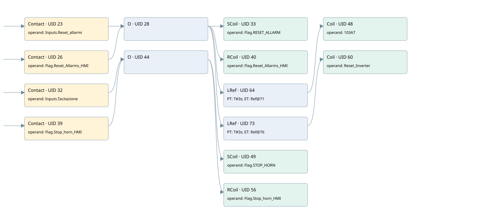

com_w3 bit8 (reset_allarm)
allarm manager · 검색 색인 순서 4 · 원본 내부 NID 추정 9
백업 PLF 원본의 2649214 바이트 위치에서 복원한 XML. 검색 문서 930의 객체 키 161022008317000000000000와 연결했다. 이름 해석 12/14개. 남은 RefId는 상수 또는 미해석 참조다.
연결 구조 다시 그리기
원본 Part/PCon/Wire를 이용한 연결도다. TIA 화면의 래더 배치 또는 실행 결과를 재현한 그림은 아니다. 핀 연결은 아래 표와 원본 XML을 기준으로 읽는다. 노드 위에 마우스를 두면 피연산자 이름을 볼 수 있다.

접점·코일·블록과 피연산자
| Part UID | Gate | Negated 핀 | 연결 피연산자 |
|---|---|---|---|
| 23 | Contact | operand = Inputs.Reset_allarmi | |
| 26 | Contact | operand = Flag.Reset_Allarms_HMI | |
| 28 | O | ||
| 33 | SCoil | operand = Flag.RESET_ALLARM | |
| 40 | RCoil | operand = Flag.Reset_Allarms_HMI | |
| 64 | LRef | 호출 참조: RefId 77; PT = T#3s; ET = RefId (RefId 없음) / ORef UID 71 | |
| 48 | Coil | operand = 103A7 | |
| 73 | LRef | 호출 참조: RefId 77; PT = T#3s; ET = RefId (RefId 없음) / ORef UID 76 | |
| 60 | Coil | operand = Reset_Inverter | |
| 32 | Contact | operand = Inputs.Tacitazione | |
| 39 | Contact | operand = Flag.Stop_horn_HMI | |
| 44 | O | ||
| 49 | SCoil | operand = Flag.STOP_HORN | |
| 56 | RCoil | operand = Flag.Stop_horn_HMI |
접점 경로를 펼친 조건식
Contact·O/A·비교기의 원본 연결을 읽기 쉽게 펼친 보조 해석이다. POWER는 전원 레일 시작을 뜻한다. 호출 블록·에지·타이머의 내부 동작과 다중 쓰기 순서는 이 표로 실행 검증하지 않았다. 미해석 핀과 RefId는 원문 연결표에서 확인한다.
| UID | 동작 | 대상 | 원본 접점 경로 | 내용 |
|---|---|---|---|---|
| 33 | SCoil | Flag.RESET_ALLARM | (Inputs.Reset_allarmi OR Flag.Reset_Allarms_HMI) | 조건 성립 시 Set |
| 40 | RCoil | Flag.Reset_Allarms_HMI | (Inputs.Reset_allarmi OR Flag.Reset_Allarms_HMI) | 조건 성립 시 Reset |
| 48 | Coil | 103A7 | LRef UID 64.Q (블록 동작 확인) | 조건에 따른 Coil 기록 |
| 60 | Coil | Reset_Inverter | LRef UID 73.Q (블록 동작 확인) | 조건에 따른 Coil 기록 |
| 49 | SCoil | Flag.STOP_HORN | (Inputs.Tacitazione OR Flag.Stop_horn_HMI) | 조건 성립 시 Set |
| 56 | RCoil | Flag.Stop_horn_HMI | (Inputs.Tacitazione OR Flag.Stop_horn_HMI) | 조건 성립 시 Reset |
원본 배선 연결
| Wire UID | 동일 Wire 연결 끝점 |
|---|---|
| 21 | Powerrail {} ↔ Part 23.in ↔ Part 26.in ↔ Part 32.in ↔ Part 39.in |
| 22 | ORef 24 (Inputs.Reset_allarmi) ↔ Part 23.operand |
| 29 | Part 23.out ↔ Part 28.in1 |
| 25 | ORef 27 (Flag.Reset_Allarms_HMI) ↔ Part 26.operand |
| 30 | Part 26.out ↔ Part 28.in2 |
| 38 | Part 28.out ↔ Part 33.in ↔ Part 40.in ↔ Part 64.IN ↔ Part 73.IN |
| 36 | ORef 37 (Flag.RESET_ALLARM) ↔ Part 33.operand |
| 42 | ORef 43 (Flag.Reset_Allarms_HMI) ↔ Part 40.operand |
| 68 | ORef 70 (T#3s) ↔ Part 64.PT |
| 67 | Part 64.Q ↔ Part 48.in |
| 69 | Part 64.ET ↔ ORef 71 (RefId (RefId 없음)) |
| 62 | ORef 63 (103A7) ↔ Part 48.operand |
| 78 | ORef 75 (T#3s) ↔ Part 73.PT |
| 77 | Part 73.Q ↔ Part 60.in |
| 79 | Part 73.ET ↔ ORef 76 (RefId (RefId 없음)) |
| 51 | ORef 55 (Reset_Inverter) ↔ Part 60.operand |
| 31 | ORef 34 (Inputs.Tacitazione) ↔ Part 32.operand |
| 45 | Part 32.out ↔ Part 44.in1 |
| 35 | ORef 41 (Flag.Stop_horn_HMI) ↔ Part 39.operand |
| 46 | Part 39.out ↔ Part 44.in2 |
| 54 | Part 44.out ↔ Part 49.in ↔ Part 56.in |
| 52 | ORef 53 (Flag.STOP_HORN) ↔ Part 49.operand |
| 58 | ORef 59 (Flag.Stop_horn_HMI) ↔ Part 56.operand |
식별자 해석 근거 14개
| ORef UID | RefId | 이름 | IdentXmlPart 파일 | 해석 방법 |
|---|---|---|---|---|
| 24 | 57 | Inputs.Reset_allarmi | 0565-IdentXmlPart.xml | UID/RID + search-text + NID agreement |
| 27 | 61 | Flag.Reset_Allarms_HMI | 0565-IdentXmlPart.xml | UID/RID + search-text + NID agreement |
| 37 | 2 | Flag.RESET_ALLARM | 0565-IdentXmlPart.xml | UID/RID + search-text + NID agreement |
| 43 | 61 | Flag.Reset_Allarms_HMI | 0565-IdentXmlPart.xml | UID/RID + search-text + NID agreement |
| 70 | 79 | T#3s | 0566-IdentXmlPart.xml | literal candidate: UID/RID/NID + nearby named declarations + search-text agreement |
| 71 | (RefId 없음) | 미해석 RefId | 식별 선언 원본 참조 | 미해석 |
| 63 | 76 | 103A7 | 0567-IdentXmlPart.xml | UID/RID + search-text + NID agreement |
| 75 | 79 | T#3s | 0566-IdentXmlPart.xml | literal candidate: UID/RID/NID + nearby named declarations + search-text agreement |
| 76 | (RefId 없음) | 미해석 RefId | 식별 선언 원본 참조 | 미해석 |
| 55 | 74 | Reset_Inverter | 0567-IdentXmlPart.xml | UID/RID + search-text + NID agreement |
| 34 | 63 | Inputs.Tacitazione | 0565-IdentXmlPart.xml | UID/RID + search-text + NID agreement |
| 41 | 62 | Flag.Stop_horn_HMI | 0565-IdentXmlPart.xml | UID/RID + search-text + NID agreement |
| 53 | 4 | Flag.STOP_HORN | 0565-IdentXmlPart.xml | UID/RID + search-text + NID agreement |
| 59 | 62 | Flag.Stop_horn_HMI | 0565-IdentXmlPart.xml | UID/RID + search-text + NID agreement |
검색 코드 보조 자료
참조 명칭을 찾기 위한 자료이며 실행 순서나 AND/OR 관계는 위 연결표로 확인한다.
"inputs".reset_allarmi "flag".reset_allarm "flag".reset_allarms_hmi "inputs".tacitazione "flag".stop_horn "flag".stop_horn_hmi "flag".stop_horn_hmi "flag".reset_allarms_hmi tof "iec_timer_0_db" t#3s "103a7" tof "iec_timer_1_db" t#3s "reset_inverter"